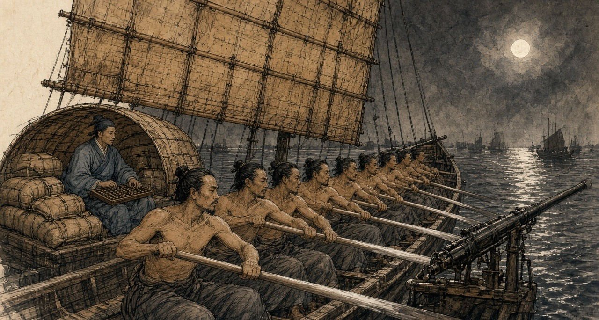
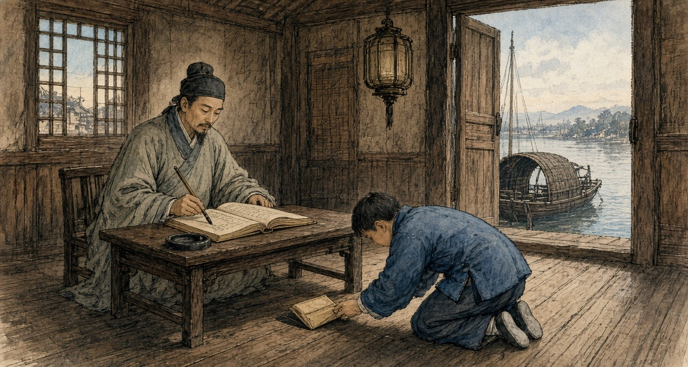
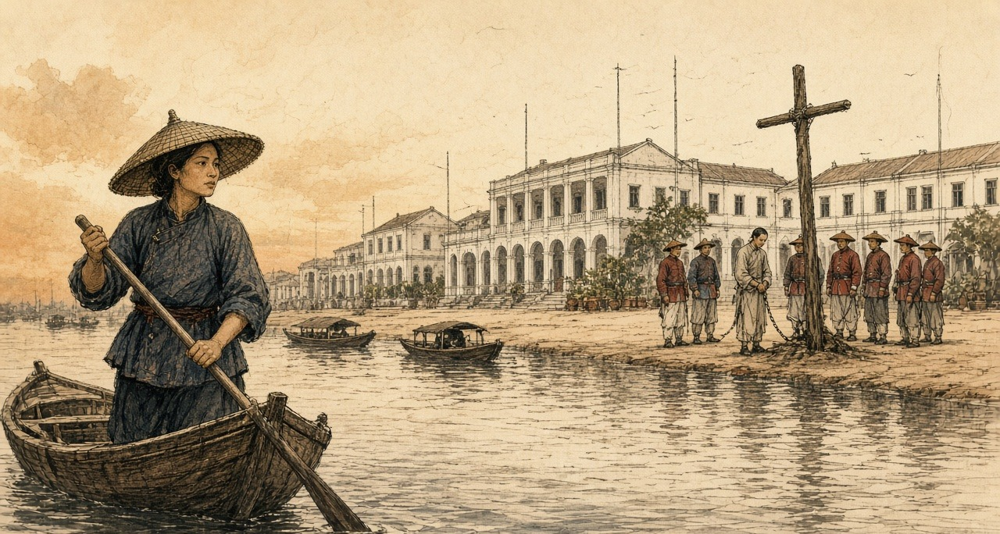
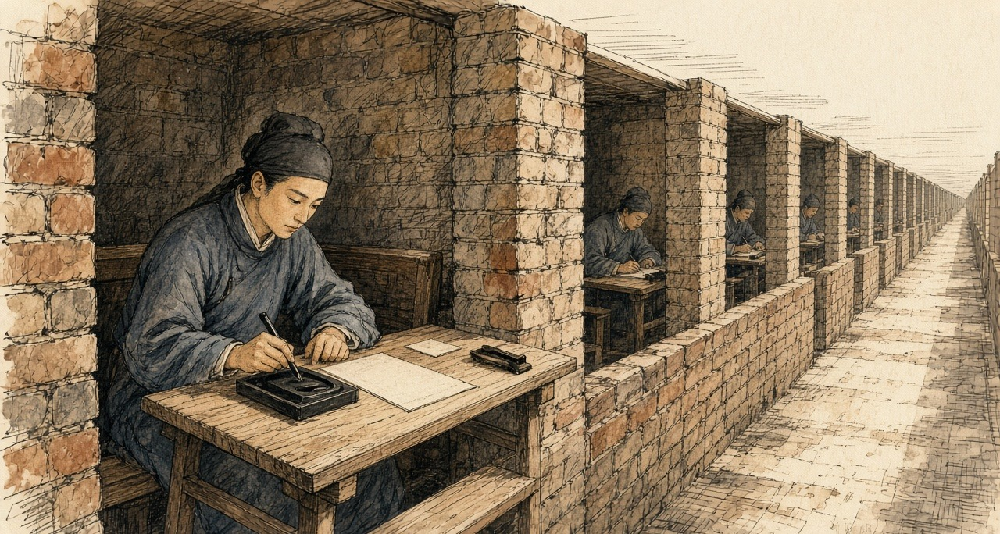
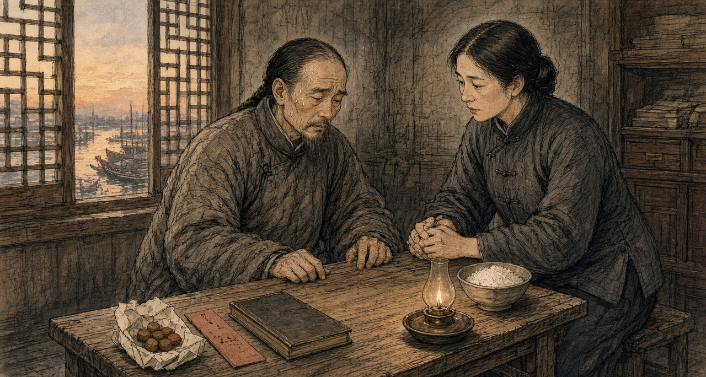
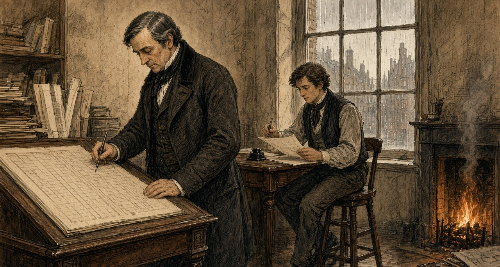

Chapter 2
Boats at Canton, 1839
The Pearl River from Lintin to the Canton suburbs, 1826 to 1839, and the City of London
The chests left the receiving ships in long varnished boats that Canton officials called 快蟹 kuàixiè, fast crabs, and 扒龙 pálóng, scrambling dragons. A report the Canton authorities sent the throne in 1832 counted between one and two hundred of them running opium from Lintin to the money-changers' shops of the province, firing on the coast guard when they met it. William Hunter, the American who worked at Canton from 1825, describes them as long and broad in the beam, wider abaft, so that there was room in the stern for the brokers' agents who always rode with the cargo. Sixty to seventy men pulled from low benches along both sides of the deck under a mainsail and foresail of matting, bamboo, and rattan. They carried a large gun in the bow, swivels, spears, and flintlocks bought off foreign ships. Government cruisers were painted black and red. The smuggling boats were varnished bright.
The censor 冯赞勋 Féng Zànxūn told the emperor about the iron netting hung along both sides against shot, and the fifty or sixty oars that sent the boats along so fast that people called them 插翼 chāyì, boats with wings stuck on. In 1836 the official 许乃济 Xǔ Nǎijì, who had served in Guangdong, wrote that when a government cruiser did close with one, the crab fought back, and men were wounded and killed.
The river had its own people. The 疍家 Dànjiā, Tanka in the foreigners' spelling, were born on boats, fished and ferried from them, and married on them. In May 1729 the Yongzheng Emperor wrote in an edict the Guangdong gazetteers copied out in full that the people of the province looked on the boat households as a base sort and would not let them ashore, and the boat people, not daring to resist, stayed cramped in their boats all their lives, though they paid the fish tax like anyone. "蛋户本属良民," he wrote, the boat households are by origin good people. Those who could build a house might live in the villages near the water and be registered with everyone else, and local bullies were forbidden to drive them off. The edict gave the Tanka the law on paper.
The officials' reports call the smuggling crews desperate men and runaways. Whoever they were, the syndicates paid them by the run.
* * *
The Canton River, half a mile below the Factories, June 1833
Bow-from count-down fourth bench, left side, that-one is my place. Three years I pull-already. Beside that-one, Ah-Kau, also is Tanka, Honam side those people. His woman and my woman, two sisters. Bench underneath, my grass-sandals, my rice-tin, one hand-wiping rag. The two hands, three years come-down, take-go scrape fish-scales also can.
Leave Lintin, dusk-close. Receiving-ship the men already take the smoke-balls put-all mat bags, furnace-mouth the agent already check-good the paper. He sit at stern the little roof underneath, tea, abacus, the bags stack until surround-all him, like a sit-egg hen so. Him, we not with him talk. He with the steersman talk, steersman shout-one-sound, we then pull.
Sixty oars, same one breath. Body toward-front lean, blade drop water, body toward-back bend, whole person, heels dead-press-hold front the bench. Up. Again come. First hour, the shoulders complain. Second hour, not complain already, only fire-like burn. Pass-already that time, not is man anymore, is the boat's one piece, like an iron nail so. Boat-master use heel at deck on-top beat time, the sound from board underneath pass-up come, shake until enter the bottom inside. The water from oar-handle flow-down arms, flow-enter armpits. Hand split-cracks those places, soak-all salt. Head-top the mat-sail eat-straight wind that time, paak one sound ring, the boat then jump-one-jump, everybody then laugh a-little, because the sail do work, the oar then breathe-get a breath.

Run one night water, better-than cast one month net. My mother's coffin, already pay-all count, rely-on this oar. My son at Honam bank on-top the old scholar's school-room read book, also is rely-on this oar. Bank on-top the children at road on-top throw mud-lumps drop his body. He still go.
Most nights, anything have-none. Mandarin-boat come-out, black and red, hang-up a lantern. Our steersman shout, their that-side also shout. Throw few stones cross-come, we throw, they throw, thump-drop deck on-top, splash-drop water. Have one time a stone scrape-off-already seventh bench the young-boy's ear, the blood along the neck flow-down come, he same-way pull. After-that, the mandarin-boat turn-head go, return-go write its report-paper, we continue up. Do big-opera, Ah-Kau say-so. Two sides all buy-all ticket already.
Tonight, not-same.
River on-top change-already a new official, furnace-mouth the agent afternoon that-time say, this-one not-yet feed-full. No person listen. Every-every new official, pass one month then also is same-way eat.
Thirteen Factories underneath half-mile water, bank on-top foreign-ghosts the lamps already look-get-to, two sides pitch-black inside rush the boats out-come. Not is one. Five. Gong-sound. Torches. Bow stand-all men, hold-hold long hooks. Steersman take the boat dead-pull cross-go, big-shout one sound, we pull, pull until the bench also creak-creak ring. Boat-master have-no again beat time. Now no-need time already.
They bite-hold not let-go. Full one mile water, bite-hold not let-go. Our bow the big-gun fire-already one shot, the sound shake until enter my teeth inside, the smoke roll-back come cover-all us, make until I blind-rush so pull, all-way cough, the oar-handle both wet and slip. Their fowling-guns. Hit-drop deck on-top, like someone scatter broken-gravel so sound. Stern the swivel-gun again ring, stern at-there someone at-there scream, very sharp, like slaughter-pig so.
After-that, Ah-Kau's oar stop-already.
My oar hit-into it, wood hit wood, shake until my elbow also numb. I turn-around head. He sit at there, the hand still hold-hold the handle. One bullet from his armpit-under hit-already enter-go, toward-bank that side, he look-hold me, like want ask me something so, ask rice-price maybe, or is ask now what time-hour. His mouth open-big,吐-out come is blood, torch-light shine-hold black-black, one big mouthful, flow-pass his chin, flow-pass his chest, flow-also drop my grab-hold his shirt the hand on-top. He is warm. The blood is warm. He want stand-up body, the two legs not hear him use. He again sit-return drop the bench on-top, slowly so, like an old-man sit-down so, after-that he whole-person lean-drop me on-top, the head rest-hold my shoulder, heavy-until-die, heavy-until-die, have-no again stand-up.
Four-sides all is hooks. Have one hook-hold my bench beside the gunwale. Someone stand at boat-side big-shout jump ah, jump ah, my front the bench already empty-already.
I take Ah-Kau put-flat at deck on-top. I not know myself why want so do. Simply have-no time do, but I do-already, put-flat him, face toward-up, like usual lay-down a man so, after-that I then turn-pass gunwale jump-down go.
Night the river, top warm until like soup so, bottom cold. Sink-down go cold water inside, open-big eyes, anything all see-not, only see top the torches take the water shine-until brown-mud colour so. I shut-hold the breath, shut until the chest like fire-burn so, two hands claw-hold river-bottom the mud swim-cross go. Tanka child not-yet learn walk first learn swim, bank on-top the people always laugh-hold so say. That night, my body itself know swim, no-need me mind.
Wait I float-return up-come, far-far, at bank-side the reeds and mud inside, our boat already stop-already at river middle, their boats surround-hold-all, like the ants surround-hold a fall-drop-ground cake so. Torches. Shout-sound. I lie-flat at reeds inside, only stick the nose out-come, the mosquitoes bite until my whole face all is, I listen-hold them cut-open the mat bags.
Ah-Kau's woman, my woman's older-sister. Who go with her say. Me.
* * *
Canton and the delta, 1826 to 1837
The Canton Register, the British free traders' weekly, reported the fight on 17 June 1833. A new naval commander had ordered all fast crabs destroyed. Five government boats caught a crab coming up about half a mile below the factories, chased her a mile, and hemmed her in. One crew member was killed, the rest abandoned the boat, and many were wounded. Some three hundred men had been in the fight. The officers found two chests of opium on board and a book listing everyone to whom the cargo was consigned. The book, the paper added, "was fortunately repurchased from the officers at the scene."
The opium came out of the receiving ships against a chit, a delivery order written by a foreign house in the Factories after a Chinese broker had paid in silver. Xu Naiji named the brokers: "有省城包买户，谓之窑口," wholesale buyers in the provincial city, called 窑口 yáokǒu, furnace mouths. The 1832 report put them among the money-changers and silversmiths, whose furnaces for assaying sycee could refine raw opium too, some in a street beside the Thirteen Factories. Between furnace mouth and receiving ship ran the boat, and along the boat's route stood a line of men with their hands out.
The navy's share was organized early. The 防海纪略 Fánghǎi jìlüè, a late-Qing history that follows the scholar 魏源 Wèi Yuán closely, says that after the governor-general 李鸿宾 Lǐ Hóngbīn set up anti-smuggling patrol boats in 1826, the patrols took 规银 guīyín, customary silver, of thirty-six thousand taels a month and let the opium through. 卢坤 Lú Kūn abolished them in 1832, too late to pull the navy's habits back. The Canton Register of December 1832 reported that bribes to escape the ban on building fast crabs had grown so steep that delta boatyards could no longer afford to build them, and two new crabs had been built at Lintin itself, on a raft moored between two foreign ships, where no Chinese official had jurisdiction. The bigger carried sixty men, small swivels, pikes, knives, and plenty of round stones. The run to Canton went at a fixed fee, so well managed that officials seldom came near. The occasional skirmishes, the editor wrote, were "forms of opera." Some of the opium, he added, went up to Canton in the coast guard boats themselves.
Inland, the customs houses ran on fees. In January 1837 the paper passed on what the tea men from the Wuyi hills said: since early 1835 the dealers carrying opium north to trade for tea had paid the customs houses at Shaoguan and Ganzhou a fixed sum on every ball of Patna let through, half a dollar at Shaoguan, and both houses had grown rich. Hunter, who sold the drug through brokers, describes what happened when a new magistrate arrived. The question of fees arose and was soon settled, "unless the new-comer was exorbitant in his demands," and then the brokers came back with beaming faces and immunity reigned again.
In 1837 the governor-general 邓廷桢 Dèng Tíngzhēn restored the patrol boats. Wei Yuan, writing in the 1840s, recorded what one of his officers did with them. The deputy commander of the Guangdong navy, 韩肇庆 Hán Zhàoqìng, made his money protecting the smugglers. He made an agreement with the foreign ships: out of every ten thousand chests, a few hundred would be handed over to the navy so that it could report seizures. Sometimes navy boats carried the opium into port themselves. On the strength of his seizures Han was promoted to brigade general, 总兵 zǒngbīng, and awarded the right to wear the peacock feather. "水师兵丁，人人充橐," every man in the navy filled his purse, and the opium coming in each year rose to forty and fifty thousand chests.
* * *
A customs station of the Hoppo on the river below Canton, autumn 1838
Table-face the papers, the brush, the ink-stone. Drip little-little water drop the ink-stone on-top, grind. The ledger, neat-neat tidy-tidy. Every one stop-stay boat, boat name, load what cargo, boat-master's name, hand-over-already how-much duty. Not stop-stay those boats, the ledger not know.
Sky not-yet bright they then come. Furnace-mouth the runner-boy, wear a good tidy blue jacket, two hands always cold-ice-ice, at gangplank on-top bow until very low, call-sound Uncle, weather cold ah, Uncle himself take-care body, after-that take the paper packet put at table-corner the ink-stone underneath. Very proper-rule. Myself, also speak-return some very proper-rule words. Ask-after his master's old-mother. The boy say old-lady very good-spirit, thank Uncle hang-heart. After-that, he then go. The paper packet inside, is foreign-silver, chop-mark and weigh-pass all. From head to tail, we all not speak that one word.

Hoppo send-down come that salary, write at paper on-top that share, even keep my mother eat rice also not enough. My on-top the superintendent know, his on-top still have a big-official. The paper packet, one layer one layer so go-up, one piece, one piece, one piece, like lamp-wick suck water so. Stay-return at my place those, my son's teacher, my mother's medicine, pass-New-Year.
Still have the pipe. That thing also is.
The pipe is from cough start. Winter at river on-top, the wet-air enter-already the chest inside. A colleague say, eat one pipe la, eat one pipe then not cough already. Really stop-already. Six years before matter already, that-time. Now once reach afternoon, monkey-hour, the body then ask you take. Not polite. From the two eyes start, flow eye-water. After-that, the nose. Yawn, one connect one, yawn until jaw-bone also crack-crack sound. Have a cold-air from spine-back underneath walk-up come. If send-packet the boat late-already, hold-brush the hand then shake, the ledger on-top write-out come the characters, like drunk-man write so. After-that, return home, the lamp, the needle, the tiny-tiny bead at fire on-top swell-big, turn-black, one pull, long-long one pull. The warm-air return-back enter two hands inside. This world four-sides the edges change until soft-ripe all, very kind, like an old quilt so.
My woman sit at next-room sew clothes, not enter-come. My son eleven years. He read Four Books, familiar-pass me fifteen years that-time. Teacher say, this boy, provincial examination, maybe can.
This year autumn-between, have one memorial's copy-book at the river on-top one pass one, I shut-close the shutter, at this table on-top look. Court of State Ceremonial, Huang Juezi. Eat-smoke people, give one year time break. One year after, death-crime. Do-official who eat-smoke, crime heavy-pass common-people. And-also sons and grandsons not-allow sit examination.
That one line characters, I look-already one time. Again look one time. The candle at-there jump, the smoke straight-straight go-up, after-that bend-already.
My son, his name write at examination-hall the list on-top. My son, his name never will at the list on-top.
That night I have-not light the lamp. Pitch-dark lie at the bed on-top, two hands tuck at armpits underneath. Midnight, the cold come-already. From foot-sole underneath well-up come, like a boat enter-water so. Knee-cap the bones, someone at inside twist-hold. Whole body pour-all cold-sweat, once come-out then cold-ice-ice. Next-room my woman breathe-air the sound, I hear-out-can she have-not sleep-hold. Ox-hour, I stand-up body, walk-go the box at-there, light-hold the lamp. Two hands shake until the needle hold-not-steady the bead, fall-already drop ground, I kneel-drop ground-under, use fingers at the dust inside feel-return it out-come, kneel at-there take it put-return up the needle on-top.
Morning the boy again come, do a bow, say Uncle look-down like very tired, Uncle himself take-care body. Take the paper packet put at the ink-stone underneath.
* * *
Peking and Canton, 1836 to 1838
The court argued about the boats and the pipe in writing. In 1836 Xu Naiji proposed giving up the ban, taxing opium as a medicine, and allowing it only by barter so that no silver would leave. 朱嶟 Zhū Zūn and 许球 Xǔ Qiú answered him. Zhu's memorial, which the Canton Register translated that November, asked why, if the export of silver could be stopped as the legalizers claimed, the import of opium could not. Prostitution, gambling, robbery and treason were all forbidden and still committed, he wrote. Should those laws go too?
In June 1838 黄爵滋 Huáng Juézī, of the Court of State Ceremonial, sent up the memorial the customs clerk read with his shutter closed. Silver had grown so dear, he wrote, that a tael now cost "一千六百有零," sixteen hundred copper cash and more. Lin Man-houng, who has reconstructed the rates, puts it at about a thousand cash around 1800. A farmer paid his land tax in silver and sold his rice for copper, and Huang named the leak in plain words: "粤省奸商勾通巡海兵弁，用扒龙、快蟹等船，运银出洋，运烟入口." The treacherous merchants of Guangdong, in league with the coastal patrol soldiers, used the scrambling dragons and the fast crabs to carry the silver out and the opium in. Smokers made the market, so he proposed a year's grace and then death. The emperor sent it to the provinces for comment. 林则徐 Lín Zéxú, governor-general at Wuchang, answered with a programme and attached the withdrawal prescriptions he had been collecting for more than ten years, "目击鸦片烟流毒无穷，心焉如捣," having watched the endless poison of opium with a heart pounded as in a mortar. In Hubei he had paid out of his own salary for a thousand courses of pills to be made up for smokers.
Deng Tingzhen was already squeezing the river. In January 1838 he reported to the throne that between March and December of the previous year his officers had made thirty seizures and arrested a hundred and fourteen people, and taken 8,661 taels of sycee and 3,848 catties of opium. A ball from the foreign ships, he wrote, that used to cost forty dollars now went for sixteen to eighteen.
In April 1838 Kwok Sze Ping, in the Register's spelling, who had smuggled for five years and kept a shop where customers came to smoke, was strangled at Macao on the emperor's order. That month the Friend of India at Serampore reported that the Guangdong police had broken up the fast crabs and scattered the brokers. On 13 July the broker the foreigners knew as Ko Kwan was arrested.
The foreigners had a replacement ready. In February 1838 Deng complained in an edict that they were bringing opium up to Canton in their own decked boats: "It is just like the old 'fast crabs'." The crabs had Chinese crews that Chinese officers could catch. The new boats flew foreign flags.
In early December 1838 chests were seized as they were landed at the house of the British merchant James Innes, and the Hong merchant who had stood security for the ship was set out in public in a heavy wooden collar. On 12 December officers brought a convicted dealer into the square in front of the Factories and began to set up the cross to strangle him there. Hunter, writing forty years later, misdates the scene to February, but his picture is sharp: the victim stood by the cross with a chain about his neck, held by two gaolers, while the presiding mandarin sat by his tent and his servants kept bringing him fresh pipes. Foreign merchants poured out to protest, and a boat's crew off the British ship Orwell smashed the cross and laid the pieces over the executioners' heads. A crowd Hunter put at eight or ten thousand stoned the factories until officers came with whips at dusk. The prisoner was taken off and strangled at the regular execution ground.
On 26 February 1839 the officers came back.
* * *
A sampan off the Factory Square, Canton, 26 February 1839
Afternoon, the foreign-ghosts all go-out-all river-face, sit-hold their little boats, at-there sport-pull oar. Have-no money take also put-out strength pull an oar, only foreign-ghosts first will. My sampan, moor at square underneath the stone-steps side, wait guest. Ah-Shui at home watch-hold the children, his waist-back still is not-good, since the fast-crabs scatter-all after then have-no work open. This boat is my house, also is my work. Now, the oar belong-to me hold.
Have soldiers walk-enter the square inside. Very many. Not is run, is walk, like usual do-used-to these things people so walk. Their behind, one sedan-chair. The chair behind, one man walk-road, the neck lock-hold iron chain.
They at street-mouth corner at-there do, not is straight-face-hold foreign-ghosts the big doors. One wooden cross-frame, two men use big wood-mallets drive-drop ground-under, duk, duk, duk, the sound cross water-face pass-reach come my place, clear-clear. That man, they push him stand-close go. Spine-back stick-hold the wood. His two arms, they toward two-sides pull-open, tie-tight at the cross-wood on-top, the neck then tie-hold the upright-wood, use a cord loop-hold. Young, this-one. Very thin. The queue loosen-open-already.

He have-no shout. His two feet, I look-hold his two feet. Bare-feet, the toes at stone-slabs on-top move-down move-down, dead-grip-hold, like a man at big-swell inside want at deck on-top stand-steady so.
The executioner walk-go cross-frame behind. He take a wood-stick stick-drop the neck behind the cord inside, after-that turn.
Look-hold the water la, I with myself say. My two eyes have-no move-away. That man's face turn-black, first is red, after-that turn-black, purple-black, like a bruised-already plum so. His mouth open until very big, the tongue stick-already out-come. Cross-wood on-top those fingers open-wide, close-tight, open-wide, at the wood on-top scratch. He whole-person at the cords on-top jump-up, again jump-up, the two legs toward front kick-wild, the trousers front soak-out one big dark-stain come. The executioner take the stick again turn-more one circle. Whole-person lean-press drop the stick on-top, like a man wring-hold a very heavy fish-net so.
The two feet stop-already. After-that, very long-time, I not know have how long, the toes themselves still at-there move little-little.
Very quick only, the foreign-ghosts afterward say, those have-not go-out river-face foreign-ghosts. From water-face look-cross go, not quick.
They untie-open him, he whole-person toward-front fall-drop the stone-slabs on-top, the face stick-hold stone-slabs, two men grab-hold his two arms, two men grab-hold his two legs, carry-hold him enter-already Old China Street. The soldiers follow-hold behind walk. The square empty-all. Have a dog walk-cross come, smell-down stand-pass cross-frame that place.
After-that, have a foreign-ghost from stone-steps walk-down come, pull-finish boat the face red-flushed, climb-up my sampan, point-one-point opposite bank, mutter-already few sentences not-know-what angry words, I then pull-cross go. Otherwise still can how.
That night Ah-Shui ask me today see-reached what. I say anything have-none. Eat rice la, I say, eat la.
Sell-smoke man, the soldiers say. Big or is small, water on-top no person know. Ah-Shui, pull-already three years fast-crab. According-to that word count, he also is.
After, Thirteen Factories front those foreign-ghost flags drop-all down-come, have-no again raise-return up-go. For that man, the people say. Not is. Is for their square.
* * *
The Gongyuan examination hall and the Yuehua Academy, Canton, March 1839
Imperial Commissioner at first-month twenty-fifth day arrive-step, take Yuehua Academy make-already his headquarters. At-there have a couplet, the people say, is his own-brush write. Not-enough one week, whole provincial-city the book-reading men all recite-out-can:
Sea takes-in hundred rivers, have capacity then great; Cliff stands-up ten-thousand fathoms, have-no desire then hard.
Big official newly arrive, according-to custom must examine-down the students, look-down this place's literary-wind. Guanfeng examination. Myself, Yuexiu Academy, twenty-six years, provincial-examination fail-rank two times, my father is Panyu one teach-book master, his father also is. We by-them summon-called, from Yuexiu, from Yuehua, from Yangcheng, six-hundred forty-five men. Walk-enter examination-hall the cells inside, wear-hold best that long-gown, bring-along ink-stone, hair-brush, with our fathers that-year walk-enter go same-like. Sit-down. Wait give-out theme.
The paper inside, tuck-hold second slip paper.
On-top the questions, not is come-from Four Books Five Classics. Ask furnace-mouths at where, open furnace-mouths those men call what name. Who do retail-selling. Before the prohibitions why not see effect. How-way first can cut-off-completely. Answer-paper on-top no-need write name. The paper straight-hand go Imperial Commissioner's own hand inside.
Whole examination-hall quiet-all. Six-hundred-more men, no person cough one sound. I hear-reached next-door cell the man take the brush put-drop the ink-stone on-top. After-that, again pick-up. After-that, again put-down.
My cousin's husband, is Panyu county-yamen one clerk. My mother's-brother, at West Gate open shop, who with who take goods, I know. Pull-up one family's one string, whole house all will collapse-down come. My father at I not-yet hold-steady the brush that-time then teach me read Mencius: now a man suddenly-sees a child about-to fall-into a well. The heart move first. After-that first is calculation.
I think-up West Gate behind those smoke-houses, daybreak that-time walk-out come those men, the face grey until like stove-ash so. Think-up our street the old schoolmaster, one-book one-book so sell-all his books, first sell commentaries, after-that even classics also sell-all, sell until last only remain-return the pipe. Think-up Tanka those children, spine-back still stick-hold mud, while the old master still teach-hold book that-time, sit at his school-room back-most that row.
I fresh-again grind-pass the ink. The characters write until very small, very clear. First question, I write-already I know those few furnace-mouths down-go. Third question, before the prohibitions why not see effect, I only answer-already one line characters.

Navy protects smuggling.
Wait the papers hand-reach up Commissioner's place, the clerks afterward say, almost sheet-sheet paper all is give same one answer him.
* * *
Canton, the spring of 1839
Wei Yuan records that the students all answered with the navy's protection of the smugglers, "皆以水师包庇贩私对," and that Lin then memorialized to have the brigade general Han Zhaoqing dismissed. Lin's joint report with Deng Tingzhen and the provincial governor 怡良 Yíliáng, sent up in the spring, opens with a sentence about who dies of opium: "吸食者病于瘾而死，兴贩者罹于法而亦死." The smoker sickens of the craving and dies, and the dealer falls under the law and dies too. By the end of the third month, the report counted, Deng and the governor had arrested 1,600 people and taken 461,526 taels' weight of raw and prepared opium, 42,741 pipes, and 212 pans for boiling it down. After that, gentry chosen village by village kept the 保甲 bǎojiǎ registers and handed offenders over, and by the eighteenth day of the fifth month the officers reported a hundred and ninety-two more prisoners.
Under the Qing code as the Register summarized it in 1838, a man convicted of dealing in opium was punished under the law for smuggling gunpowder and saltpetre: a month in the cangue, then banishment to the frontier as a slave to the soldiers. The cangue was a square board of heavy wood locked around the neck, broad enough that a man in it could not reach his own mouth with his hands.
* * *
The gate of a ward in the western suburbs of Canton, the fourth month, 1839
The wood, heavy-pass an oar. Heavy-pass one chest. Two-sides wood-board, they at yamen inside clamp-hold my neck, lock-tight-already, the board then press-drop my shoulders the bones on-top, from that one moment start, the two shoulders then carry-hold it, day also carry, night also carry, have-no put-down. Still have twenty-eight days. Ah-Mui help me count-hold. I count-confused-all. She have-no confused.
The neck at the hole inside rub. First day, red. Third day, the layer skin break-already. Now flow-hold yellow-water, whole neck raw-all, like at wood-collar underneath again wear-more one wet collar so, after-that the flies then come. Two hands, I reach-not-pass the board's edge go brush them. Once shake the head, the board then swing, once swing then pull-hold the raw-flesh. So the flies stay at-there. At the sore on-top walk.
Sleep, lean-hold ward-gate the wall sit at-there. The board's corner prop-hold ground, my head hang at inside. Sleep-down, wake-down. Sleep-down, wake-down. The neck like break so. Night-night all dream same one dream, I sink-already at river-bottom the water inside, float-not-return up-come, because have something press-hold my neck.
The people walk-pass. Bank on-top the people, mostly not look. Have some look. Have a boy spit-already a mouthful spittle. His mother pull-away him, not is because he spit, is because I is boat-man, body on-top have a smell.
Ah-Mui one day come two times, bring bowl congee come. She kneel at dirt-ground on-top, hold-high the bowl, from the board's edge underneath pass-up come, use the pair chopsticks feed me, one mouthful, one mouthful, like feed baby-bird so, after-that use her sleeve help me wipe chin. Face-hold all people's face. Her face, from head to tail, a-little expression also have-none. Only have one time, wipe-hold that-time, her hand at my cheek on-top stop-already a while, have-not pull-away.
This one time, even pull-oar also not is. Is carry-load. Two bags stuff, friend connect friend, from Whampoa the foreign-ghost boat carry-up come, send-go side-alley one door-mouth, one night wage. The fast-crabs all scatter-all, break-all, the men run-all, but the children still must eat rice. Side-alley that door-mouth, the ward-headman know. Ward-headman's name-list, have my name at on-top.
Pass-finish these twenty-eight days, banish frontier. Give the soldiers do slave. Go where-place, no person tell me know. One Tanka man, go one have-no river place.
Ah-Mui say, wait you return-come that-time. She day-day all so say. Wait you return-come that-time, the boy all big-grown already.
I say yes. I have-no speak other that sentence, she also have-no speak. At us two middle, that sentence sit at the cangue-board on-top, like a fly so.
* * *
The customs station below Canton, the fifth month, 1839
Have-no again see the boy. The ink-stone underneath have-no again have paper packet. Furnace-mouth the shop, door on-top nail-already seal-board, the master run-already return village or is arrest-already, no person say. The ledger, now neat-neat tidy-tidy, true-true exact-exact, stop-stay boats few-and-fewer.
My wife's-brother from Hubei pass-cross come a book inside copy-already a prescription, is Imperial Commissioner at that-side help the eat-smoke people make that-one, take-go druggist-shop make-up-already return-come. Paper twists, two kinds. Jisuan pills: ginseng, atractylodes, angelica, coptis, many things, inside still mix-already little-little smoke-ash, let the body not-good all-at-once scream-all save-life. Every day, this kind eat fewer one pill, change other that kind pill two pills. All-way reduce, all-way reduce, reduce until none stop. She take the pills at table-face line-into one row, help me count-good, like a shopkeeper count silver-coins so, also at a red paper-slip on-top write-down-all the days. Her characters, I very many years have-not see her write-pass. Tiny-tiny, very firm.
First those few days, not count too hard-bear. The pill inside have smoke-ash, the body think itself eat-full-already. After-that, day-day fewer one pill, the body start know itself by-someone cheat-hold.
Seventh day, the two eyes flow eye-water, flow until stop-not-able, the nose also is, the water drip-drop the ledger on-top, one blot, one blot. Yawn, breathe one breath then do one yawn, jaw-bone also ache-all. Ninth day, the bowels. Flow-water. One time again one time so walk-go screen behind the bucket at-there, whole customs-station all is that stink-smell, outside the boatmen your eye look my eye. Cold, clearly fifth-month weather so hot, I wear-hold a winter-padded-gown sit at-there shake, the sweat so pour-down come. Every one joint, all have someone hold-hold a knife at inside pry, knee-cap, elbow, fingers those small bones. The layer skin like have ants at inside crawl-hold so.
Eleventh day, monkey-hour, I from the table at-there stand-up body, walk-go door-mouth, the lamp, the needle and the box right at home the bed underneath, I clear-clear know at which place, my two feet already themselves walk-hold cross-go.
Door-mouth at-there, my son stand at-there. From teacher's place early leave-school return-come. Armpit underneath tuck-hold the book. He look-down my face, look-down the winter-gown, after-that he say, Father, is-not-is because the medicine-pills ah?
He know. He of-course know la. Eleven years boy, three rooms house.
I say, is. Is because the medicine-pills. I say, return home read-book la. He do-already a bow, proper-proper one bow, after-that walk-away-already.
I walk-return go the table at-there, sit-down. I two hands dead-grab-hold the table's edge, grab until knuckle-bones all white-all, all-way grab-hold, monkey-hour pass-already, rooster-hour again pass-already. Enter-dark that-time, my woman hold-hold the lamp and rice cross-come, see-reached me sit at-there, then put-down bowl rice, take my grab-hold table-edge that hand pull-open, use her two hands wrap-hold. Very cold ah, she say. Cold until like-this.

Fourteenth day, I sleep-hold-already.
* * *
The City of London, the autumn of 1839
The China houses had partners at home who never sailed. In 1834 Hollingworth Magniac, back from Canton, joined the banker John Abel Smith and his cousin Oswald Smith in Magniac, Smith & Co., London correspondents of Jardine, Matheson & Co. Smith sat in the Commons for Chichester. When William Jardine came home in 1839, Smith introduced him to Lord Palmerston, who later acknowledged how valuable their information had been in planning the China expedition. The Canton accounts came home as account sales and accounts current, volumes now in the Jardine Matheson Archive at Cambridge. The man below belongs to no named firm.
Tuesday. Fog at eight, so thick in Cornhill the lamps were still lit, then a cold thin drizzle which has not stopped. Boz has us exactly: "Middle-aged men, whose salaries have by no means increased in the same proportion as their families, plod steadily along, apparently with no object in view but the counting-house." My salary has increased very well, but in every other particular I plod.
Coal bad this month; it smokes, and my eyes have smarted since ten.
The Canton accounts by the overland mail. I spent the forenoon upon them with young P., who reads the figures while I tick. Each consignment its own sheet of good rag paper, ruled by hand in red: the ship's name, her captain, the marks, the number of chests, Patna, Benares, or Malwa, the rate per chest obtained, the gross; then down the right hand, the charges, freight, insurance, landing, boat hire, the receiving-ship charge of five dollars the chest, commission, and below a double rule the net proceeds; and lastly how remitted, by what bills, drawn on what house, at what exchange, at what usance. P. writes a good round hand and uses the steel pen, which I dislike; it scratches, and the ink takes on it unevenly. The ink in the older books has gone the colour of weak tea.

The season's figures run very well until March and then stop. After March, a fresh sheet: chests delivered up to the Chinese Commissioner on Captain Elliot's order, against his certificates, Her Majesty's Superintendent promising in effect that the Crown will answer for them. Twenty thousand two hundred and eighty-three chests in all, the Canton papers say, across every house. Ours is not the largest share. I made P. read me the column twice.
The opium itself, the letter says, went into pits of brine and lime and out with the tide in June. A copy of one of Captain Elliot's certificates came with the letter. Good thick paper.
Mr. J. is in town and has been with the Foreign Secretary, they say. The senior partner says all will come right; the certificates are the Government's paper and the Government must pay. He said it while looking out of the window at the rain coming down Lombard Street.
Bills on London from Canton fell due today to the amount of — I need not write it. They were met.
Home by six. Rain steady. A boy selling hot chestnuts at the corner of Gracechurch Street, his hands in rags, and some poor fellow face down in the gutter by the Monument, drunk or ill; I did not stop to discover which. The fog coming up again off the river. Tomorrow the Calcutta letters.
* * *
Canton, 1839 to 1840
The regulations that reached Canton in the summer of 1839 gave smokers eighteen months to break the habit before strangulation. Lin's later memorials, added up by the historian 茅海建 Máo Hǎijiàn, report 890 more cases and 1,432 more prisoners between May 1839 and the end of June 1840. When the British ships came, Lin went to the river for men. He had learned from translated foreign newspapers, the 防海纪略 says, that the British despised the Qing navy and feared the coastal smugglers, the fishing boats, and the 蛋户, the Tanka. He enrolled five thousand able-bodied men at six dollars a month, with six more for their families.
Han Zhaoqing lost his post. Wei Yuan gives the rest in one clause after Lin's memorial for his dismissal, "终以邓廷桢所保，不能尽正其罪": in the end, because Deng Tingzhen had vouched for him, his crime could not be punished in full.
Mini-glossary
- Cangue (2 occurrences in this chapter): Heavy square wooden collar locked around a prisoner's neck as a public corporal punishment in Qing China.
- Fast crabs (6 occurrences in this chapter): Kuaixie ('fast crabs') and Palong ('scrambling dragons'); heavily armed, fifty-to-seventy-oar smuggling galleys that ran opium from Lintin into the Pearl River delta.
- Hoppo (2 occurrences in this chapter): Western name for the Imperial Superintendent of Maritime Customs at Canton, appointed by the Qing court to collect trade duties.
- Lintin (3 occurrences in this chapter): Lingding Island in the outer Pearl River estuary, where foreign receiving hulks anchored year-round to store and transship smuggled Indian opium.
- Sycee (2 occurrences in this chapter): Fine Chinese silver bullion cast into boat-shaped ingots (yuanbao) and measured by weight in taels; drained outward to pay for imported opium.
- Tael (4 occurrences in this chapter): Chinese ounce of silver (liang), approximately 1.33 ounces avoirdupois (37.8 grams), serving as the standard unit of account in Qing state finance.
- Tanka (6 occurrences in this chapter): Danjia boat-dwelling people of the Pearl River delta in Guangdong, historically barred from living ashore and heavily recruited by both opium boats and Lin Zexu's river forces.
- Yamen (2 occurrences in this chapter): The official headquarters, residence, and courtroom of a Chinese mandarin or magistrate.
Important names
- Deng Tingzhen (3 mentions in this chapter): Viceroy of Liangguang who collaborated with Imperial Commissioner Lin Zexu in the 1838–1839 Canton opium suppression.
- Elliot, Charles (2 mentions in this chapter): British Chief Superintendent of Trade in China who surrendered the British merchants' opium to Lin Zexu at Humen in 1839.
- Han Zhaoqing (2 mentions in this chapter): Qing naval officer in Guangdong promoted for staged opium seizures while running protection for the fast-crab smugglers.
- Huang Juezi (1 mentions in this chapter): Qing official whose 1838 memorial on silver drain and mandatory capital punishment for opium smokers precipitated Lin Zexu's mission.
- Jardine, William (3 mentions in this chapter): Scottish surgeon and co-founder of Jardine, Matheson & Co., who advised Lord Palmerston on the First Opium War.
- Matheson, James (2 mentions in this chapter): Scottish merchant and co-founder of Jardine, Matheson & Co. in Canton.
- Palmerston, Lord (Henry John Temple) (1 mentions in this chapter): British Foreign Secretary and Prime Minister who directed British policy in the First Opium War and the 1840 Levant crisis.
- Wei Yuan (3 mentions in this chapter): Qing scholar and historian of the Opium War and maritime geography.
- Xu Naiji (2 mentions in this chapter): Qing official who proposed legalizing and taxing opium in 1836 and was subsequently demoted.
Sources
- The Chinese Repository 中國叢報. Canton: 1832-1851. Especially the 1837-1839 issues for descriptions of receiving ships, fast crabs, centipede boats, and the Pearl River smuggling routes; vol. VII, no. 8 (December 1838), on the Innes seizure and the attempted execution of 12 December 1838.
- Qing shilu 清實錄 [Veritable Records of the Qing]. Daoguang chao. Entries concerning the opium trade at Lintin and the conduct of Guangdong naval commander Han Zhaoqing 韓肇慶.
- Chouban Yiwu Shimo 籌辦夷務始末 [Complete Account of the Management of Barbarian Affairs]. Daoguang chao. Beijing: Palace Museum edition. Huang Juezi's memorial of 1838 is printed in juan 2.
- Guangdong local gazetteers for Pearl River delta counties. Especially entries on waterways and the Tanka 疍家 boat population; (Yongzheng) Guangdong tongzhi 廣東通志, juan 7 and juan 64, and the Dingli leichao 定例類抄, juan 7, for the edict of the fifth month of Yongzheng 7 (1729), 粤東蛋户准於近水村莊居住.
- Hunter, W. C. The "Fan Kwae" at Canton Before Treaty Days, 1825-1844. London: Kegan Paul, Trench, & Co., 1882. Source for the smug boats ("scrambling dragons" and "fast crabs"), their build, crews, sails, armament and varnished hulls, the brokers' agents, the five-dollar cumsha, magistrates' fees, the river as "a city afloat," the strangling cross, the square riot (misdated by Hunter to February 1839), and the execution of 26 February 1839.
- Antony, Robert J. Unruly People: Crime, Community, and State in Late Imperial South China. Hong Kong: Hong Kong University Press, 2016.
- Brook, Timothy, and Bob Tadashi Wakabayashi, eds. Opium Regimes: China, Britain, and Japan, 1839-1952. Berkeley: University of California Press, 2000.
- Fay, Peter Ward. The Opium War, 1840-1842. Chapel Hill: University of North Carolina Press, 1975.
- Siu, Helen F. Merchants' Daughters: Women, Commerce, and Regional Culture in South China. Hong Kong: Hong Kong University Press, 2010.
- Van Dyke, Paul A. The Canton Trade: Life and Enterprise on the China Coast, 1700-1845. Hong Kong: Hong Kong University Press, 2005.
- Van Dyke, Paul A. Merchants of Canton and Macao: Politics and Strategies in Eighteenth-Century Chinese Trade. Hong Kong: Hong Kong University Press, 2011.
- Murray, Dian H. Pirates of the South China Coast, 1790-1810. Stanford: Stanford University Press, 1987.
- Wakeman, Frederic, Jr. Strangers at the Gate: Social Disorder in South China, 1839-1861. Berkeley: University of California Press, 1966.
- Polachek, James M. The Inner Opium War. Cambridge, MA: Harvard University Press, 1992.
- Chen, Song-Chuan. Merchants of War and Peace: British Knowledge of China in the Making of the Opium War. Hong Kong: Hong Kong University Press, 2017.
- Qing shilu and Chouban yiwu shimo: series-level only until juan/folio confirmed.
- 魏源 Wei Yuan. 夷艘寇海記 (appendix to 聖武記) and 道光洋艘征撫記. Source for Han Zhaoqing's arrangement ("每萬箱許送數百箱與水師報功"), his promotion and peacock feather, the academy students' answers ("皆以水師包庇販私對"), and his dismissal ("終以鄧廷楨所保，不能盡正其罪").
- 防海紀略 Fanghai jilüe (late Qing; Chinese Wikisource text). Follows Wei Yuan; source for the 36,000 taels a month taken by the patrol boats after 1826, Lu Kun's abolition of the patrols in 1832, Deng Tingzhen's restoration in 1837, "水師兵丁，人人充橐," and Lin's recruitment of five thousand men, in a passage on the smugglers, fishermen and 蛋户 the British feared, at six dollars a month plus six for their families.
- 沈渭濱 Shen Weibin. 道光十九年：從禁煙到戰爭. Quotes the memorial of the censor 馮贊勳 on the fast crabs' iron netting, fifty to sixty oars and the name 插翼, and Xu Naiji's 有省城包買戶，謂之窰口.
- 黃爵滋 Huang Juezi. 請嚴塞漏卮以培國本疏, Daoguang 18 (1838), as printed in 中國通史參考資料·近代部分 and in Qing shigao, biography of Huang Juezi. Source for the silver rate of 1,600 cash and more, the scrambling dragons and fast crabs, the year's grace, and the exclusion of smoking officials' sons and grandsons from the examinations.
- 林則徐 Lin Zexu, 鄧廷楨 Deng Tingzhen, 怡良 Yiliang. 會奏續獲人烟槍具摺, in 林文忠公政書, 使粵奏稿 juan 4. Source for "吸食者病於癮而死，興販者罹於法而亦死," the arrest of 1,600 people, 461,526 taels of opium, 42,741 pipes and 212 pans by the end of the third month of 1839, and the later 140 cases and 192 prisoners.
- 林則徐 Lin Zexu. 籌議嚴禁鴉片章程摺 (1838), with the withdrawal prescriptions 忌酸丸 and 補正丸, in 林文忠公政書, 湖廣奏稿 juan 4; the prescriptions as collected by 何其偉 He Qiwei in 救迷良方. Lin's a thousand courses of pills paid from his salary as summarized by 中華文史網 (Qing History Project, historychina.net).
- 茅海建 Mao Haijian. 天朝的崩潰：鴉片戰爭再研究 (Beijing: Sanlian, 1995), ch. 2. Lin's later arrest totals, May 1839 to June 1840.
- "林則徐在高第街的日子," 羊城網 (gznf.net), which also records that Liang Tingnan organized the examination at Lin's request; and 人民周刊, 4 May 2016. The 觀風試 of 645 students from the Yuehua, Yuexiu and Yangcheng academies and its four questions; Lin's couplet at the Yuehua Academy.
- The Canton Register, as abstracted in Roger Houghton, A Peoples' History 1793–1844 from the Newspapers, "Opium" parts 2 and 3 (houghton.hk). Source for the 1832 memorial on 100 to 200 fast crabs, the crabs built at Lintin (December 1832), the fight of June 1833 and the repurchased book, Xu Naiji's description of the boats and the yaokou (1836), Zhu Zun's memorial (8 November 1836), the Shaoguan customs fees (January 1837), Deng Tingzhen's report on the 1837 seizures and the price of a ball, his edict on the foreigners' decked boats (February 1838), the strangling of Kwok Sze Ping at Macao (April 1838), the arrest of Ko Kwan (13 July 1838), the penal code on dealers, the cangue, and the Friend of India editorial of 19 April 1838.
- Eitel, E. J. Europe in China: The History of Hongkong from the Beginning to the Year 1882. London and Hong Kong, 1895, ch. 8. The Innes seizure and the security merchant in the wooden collar, December 1838.
- Merchants and Mandarins: China Trade Era (online flipbuilder edition, pp. 246, 265), citing the Chinese Repository VII, no. 8 (December 1838), the Canton Press Extra, and the consular despatch of P. W. Snow, 6 March 1839, for the dating of the attempted execution to 12 December 1838 and the execution of 26 February 1839; Elliot's address as abstracted in Houghton, "China 1839–1840, part 10" (houghton.hk), gives the same two dates.
- Lin, Man-houng. China Upside Down: Currency, Society, and Ideologies, 1808–1856. Cambridge, MA: Harvard University Asia Center, 2006. Silver-copper exchange rates.
- Greenberg, Michael. British Trade and the Opening of China, 1800-1842. Cambridge: Cambridge University Press, 1951. The agency houses, their London correspondents, and remittance by bills on London.
- "Smith, John Abel (1802–1871)." Oxford Dictionary of National Biography. Magniac, Smith & Co. (1834) as London correspondents of Jardine, Matheson & Co.; Smith's introduction of Jardine to Palmerston.
- Jardine Matheson Archive, Cambridge University Library, MS JM/A5 (Account sales, 1810–1886), the accounts current series (including the London volumes), and the ledgers series A1, as described in the ArchiveSearch catalogue.
- Dickens, Charles ("Boz"). Sketches by Boz. London, 1836. "The Streets—Morning" and "The Streets—Night."